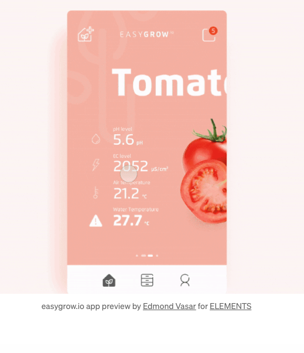

What is something you learned from this article? (3-4 sentences)
Majority of design in the website is low Fidelity of picture. Using GIF to make page chaing or picture change more smooth. It feels the web is alive and more fancy.
What was your favorite part of this article? (3-4 sentences)
There are many different design. It is good to see all of thoes and to get some basic idea. There is not too much word, but it really stop me to watch and think.
In 4-5 sentences, please explain which of the inspirations were your favorite, why, and how the interfaces achieved their goal in a unique/delightful manner.
 The app in above picture is my favorite. It start with simple interface, when you swipe it or click it, it trun to new page smoothly. It is a very comprehensive design which contanis lots of function(or area) so it can meet all the need of using of this "health food app".It can check the calories of the food, record your food(note), check graph of the activities, check account information and ect... The color used very approperate, I feel very comfortable of this page, when I look at it.
On a scale from 1 to 10, how much did you enjoy reading this article? Please briefly explain why.
9. I was wondering why there is no text. After I really read this page, I took long time to check it and think. I really learned something.